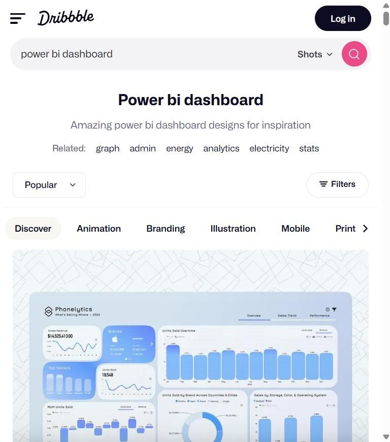
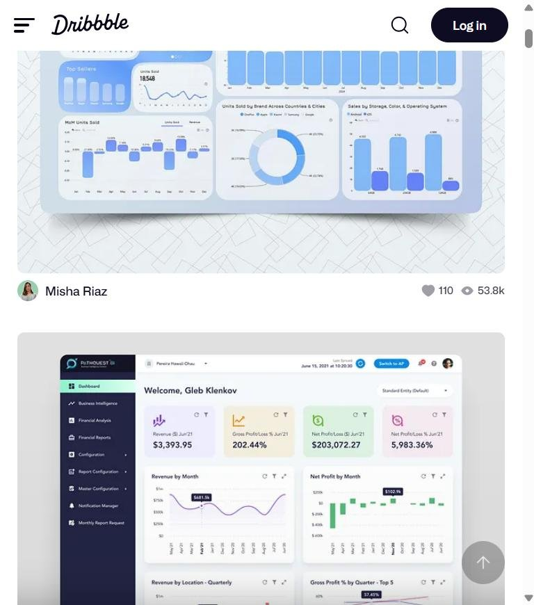
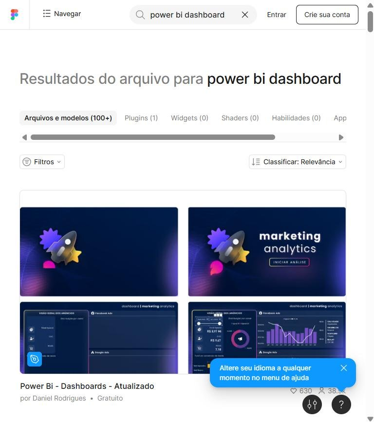
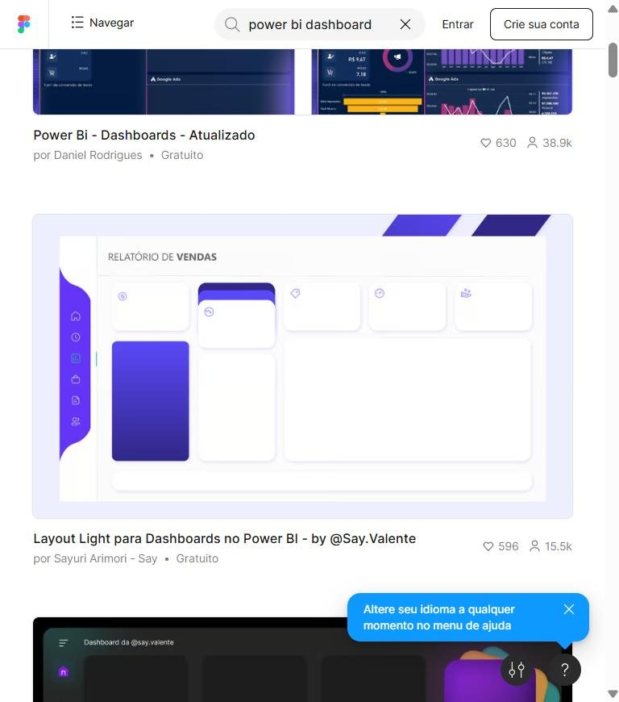
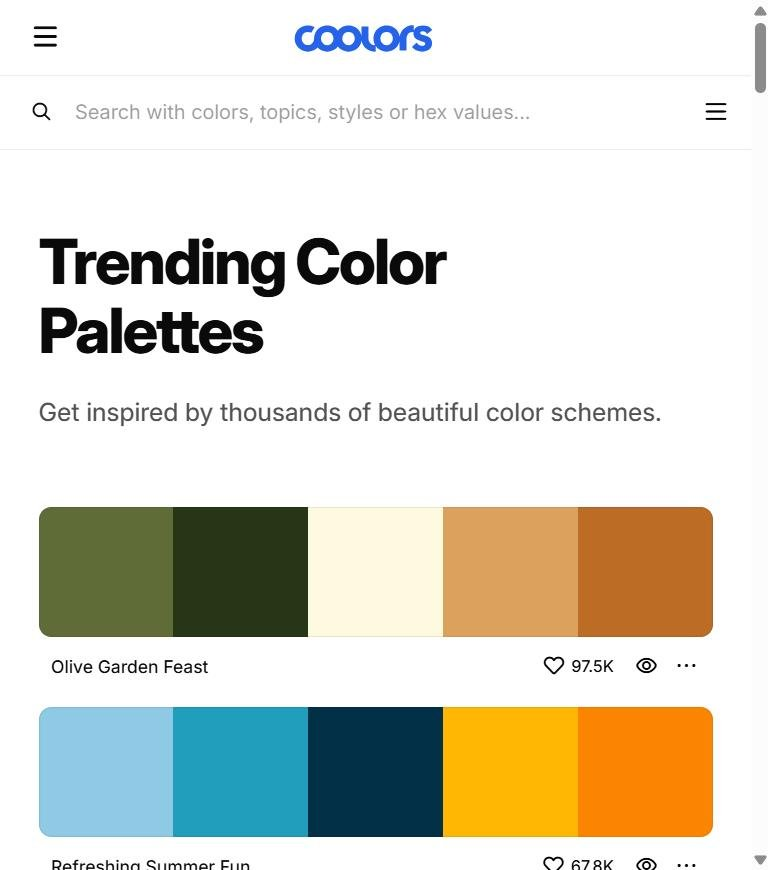
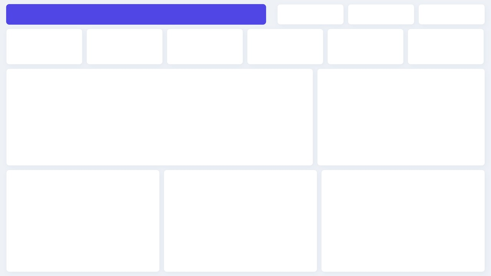

Onde buscar inspiração e como transformar referência em dashboard bonito
Você vai montar um painel de referências no Pinterest, Dribbble e Figma, aprender a “desmontar” um design, criar o wireframe e a paleta, desenhar o fundo do dashboard no Figma e aplicar tudo no Power BI.
- Nível
- Básico → Intermediário
- Duração
- 3 horas
- Você vai precisar
- Power BI Desktop, navegador e conta gratuita no Figma (e, se quiser, no Pinterest)
- Conteúdos
- PinterestDribbbleFigma CommunityCoolorsWireframeRegra 60-30-10Grid 24/16Plano de fundoTema JSONStorytelling
01Por que o design importa num dashboard
Bonito não é enfeite: é o que faz o gestor entender o número em 5 segundos.
Um dashboard é lido como uma página de jornal. O olho entra pelo canto superior esquerdo, corre a linha de cima e desce em “Z”. Quem desenha o painel decide o que a pessoa vê primeiro.
| Sem design | Com design |
|---|---|
| Gráficos do mesmo tamanho espalhados | Hierarquia: KPIs em cima, gráfico principal grande, detalhe embaixo |
| 8 cores diferentes, sem significado | Uma cor de destaque; verde = bom, vermelho = ruim |
| Títulos automáticos (“Soma de Qtd por Marca”) | Títulos que dizem a conclusão |
| Bordas, sombras e fundos diferentes em cada visual | Cartões iguais, alinhados numa grade |
Na entrevista ou na reunião, o gestor julga o seu trabalho nos primeiros segundos. Um painel limpo e alinhado passa a sensação de que os números também foram tratados com cuidado.
02Onde buscar inspiração
Bons designers não começam do zero: começam olhando muito.
- Acesse br.pinterest.com e crie uma conta gratuita (ou entre com Google).
- Pesquise em inglês, que traz muito mais resultados:
power bi dashboard designdashboard ui darkedashboard ui lightkpi cards uisales dashboard figma
- Crie uma Pasta chamada
Inspiração Dashboardse salve (Salvar) as referências que chamarem sua atenção.
Use o ícone de lupa sobre um pin (“Pesquisa visual”) para achar imagens parecidas com uma que você gostou.
Acesse dribbble.com/search/power-bi-dashboard. O Dribbble é a vitrine de designers de interface. Use as palavras relacionadas (analytics, admin, stats) para variar.
Se aparecer o aviso de cookies, clique em Reject All: não precisa aceitar rastreamento para navegar.

Compare os dois exemplos: ambos têm cartões com cantos arredondados, KPIs na primeira linha, muito espaço em branco e uma cor principal. Essas escolhas se repetem nos melhores painéis.

Acesse a Figma Community e pesquise power bi dashboard. Muitos criadores brasileiros publicam fundos prontos para usar no Power BI.
Ao abrir um arquivo, clique em Abrir no Figma (ou Duplicar) para ter uma cópia editável na sua conta.

Repare no layout claro: menu lateral, faixa de título e caixas vazias. Isso é só uma imagem de fundo. No Power BI, você coloca a imagem como plano de fundo da página e posiciona os visuais (com fundo transparente) dentro das caixas.
Formas, sombras suaves, degradês e ícones ficam muito melhores feitos no Figma. E o fundo é um único arquivo: trocar o visual do painel inteiro vira substituir uma imagem.

Acesse coolors.co/palettes/trending para ver paletas prontas, ou coolors.co/generate para gerar (aperte a barra de espaço; o cadeado fixa as cores que você gostou).
Outras fontes úteis:
- Adobe Color: roda de cores e verificação de acessibilidade (daltonismo);
- Galeria de Data Stories da Microsoft: relatórios reais feitos no Power BI pela comunidade;
- Behance: projetos completos, com o processo do designer.

03Como estudar uma referência
Não copie: decomponha. Pegue a ideia, aplique com os seus dados e a sua marca.
Para cada referência salva, responda este checklist (anote no próprio pin ou numa planilha):
| Elemento | Pergunta | Exemplo de resposta |
|---|---|---|
| Grade | Quantas colunas? Qual o espaço entre os blocos? | 12 colunas, 16 px entre cartões |
| Hierarquia | O que aparece primeiro? O que é maior? | KPIs em cima; gráfico de linha ocupa metade da tela |
| Cores | Qual o fundo, a cor principal e a de destaque? | Fundo cinza-azulado, cartões brancos, roxo de destaque |
| Tipografia | Quantos tamanhos? Números grandes? | Título 20, rótulos 10, KPIs 28 em negrito |
| Gráficos | Que tipos usa? Tem rótulos? Linhas de grade? | Barras horizontais sem grade, rótulos nas pontas |
| Navegação | Tem menu, abas, botões? | Menu lateral com ícones para cada página |
Use referências para aprender padrões. Não baixe nem publique o trabalho de outra pessoa como se fosse seu; em arquivos do Figma Community, respeite a licença indicada pelo autor e dê o crédito.
04Wireframe: desenhe antes de clicar
Cinco minutos de papel economizam uma hora arrastando visual.
Para o Dashboard de Vendas da aula 6:
| Pergunta do gestor | Visual | Tamanho |
|---|---|---|
| Como estamos no geral? | 6 cartões de KPI | Linha inteira, pequenos |
| Estamos crescendo? | Área por mês | O maior da tela |
| O que mais vende? | Treemap por categoria | Médio |
| Quais marcas? Quais produtos? | Barras e tabela ranking | Médios, embaixo |
| Como filtro? | Segmentações de ano, categoria, marca | Topo à direita |
Página de 1920 × 1080, margem de 24 px e 16 px entre blocos (as mesmas medidas da aula 6):
O olho lê: título → filtros → KPIs → gráfico principal → detalhes. Coloque a informação mais importante onde o olho chega primeiro.
Pode desenhar no papel, no Excalidraw (grátis, no navegador) ou direto no Figma.
05Paleta e tipografia
Poucas cores, cada uma com um papel.
Regra 60-30-10
| Proporção | Papel | No nosso tema |
|---|---|---|
| 60% | Fundo neutro | #EEF2F7 (cinza-azulado) |
| 30% | Superfícies | #FFFFFF (cartões brancos) |
| 10% | Destaque | #4F46E5 (índigo) |
- Use no máximo 5 ou 6 cores de dados. Mais que isso, ninguém associa cor a significado.
- Verde = bom, vermelho = ruim. Não use vermelho como cor de uma categoria comum.
- Texto escuro em fundo claro (contraste alto). Cinza claro em branco some no projetor.
- Fontes: o Power BI usa as fontes instaladas no Windows. Segoe UI (e Segoe UI Semibold para títulos) é segura: aparece igual em qualquer computador e no Power BI Service.
06Desenhando o fundo no Figma
Passo a passo para criar a moldura do dashboard da aula 6.
- Acesse figma.com → Comece gratuitamente (o plano gratuito basta; estudantes podem pedir o plano educacional).
- No painel inicial, clique em + Criar → Design (ou Novo arquivo de design).
- Renomeie o arquivo para
Fundo Dashboard Vendas(clique no nome no topo).
- Pressione F (ferramenta Frame).
- No painel da direita, escolha Desktop e ajuste W 1920 · H 1080.
- Em Fill, troque a cor para
EEF2F7. - Renomeie o frame (duplo clique na camada) para
Visao Geral.
1920 × 1080 (16:9) é o tamanho de página que vamos configurar no Power BI. Se o frame tiver outra proporção, a imagem distorce ou sobra borda.
Com o frame selecionado, em Layout grid clique em + → troque Grid por Columns: Count 12, Margin 24, Gutter 16. As colunas guiam o alinhamento dos cartões.
Pressione R (retângulo) e desenhe cada bloco com estas medidas (digite X, Y, W e H no painel da direita):
| Bloco | X, Y | W × H | Estilo |
|---|---|---|---|
| Faixa de título | 24, 16 | 1016 × 80 | Fill 4F46E5, raio 12 |
| 3 filtros | 1084 / 1360 / 1636, 16 | 260 × 80 | Branco, raio 12 |
| 6 KPIs | 24 + 314·i, 112 | 298 × 140 | Branco, raio 12 |
| Gráfico principal | 24, 268 | 1200 × 380 | Branco, raio 12 |
| Composição | 1240, 268 | 656 × 380 | Branco, raio 12 |
| 3 blocos inferiores | 24 / 640 / 1256, 664 | 600 / 600 / 640 × 400 | Branco, raio 12 |
Em cada retângulo: Corner radius 12, Stroke E2E8F0 1 px e Effects → + → Drop shadow (Y 4, Blur 16, cor preta a 8%).
Faça um cartão perfeito, depois duplique com Ctrl+D e só mude a posição. Todos ficam idênticos.
Com T, escreva “Dashboard de Vendas” em branco sobre a faixa (Segoe UI Semibold 28 ou Inter Semibold). Não escreva valores nem títulos de gráficos no fundo: eles devem ficar no Power BI, onde mudam com os filtros e são lidos por leitores de tela.
- Clique no nome do frame para selecioná-lo inteiro.
- No fim do painel da direita, em Export, clique em +: 1x, PNG.
- Clique em Export Visao Geral e salve na pasta do projeto.
Se ainda não tiver o seu, use o fundo pronto da aula:

Dá para fazer igual no PowerPoint: Design → Tamanho do Slide → Personalizado 50,8 × 28,575 cm (16:9), desenhe as formas e salve como PNG em Arquivo → Exportar.

07Aplicando o fundo no Power BI
Use o projeto da aula 6 (Dashboard_Vendas_Final.pbix).
Clique numa área vazia da página → painel Formato (pincel) → Configurações de tela → Tipo Personalizado, Largura 1920, Altura 1080.
- Ainda em Formato da página → Tela de fundo → + Adicionar imagem → escolha o PNG.
- Ajuste da imagem: Ajustar.
- Transparência: 0% (o padrão é 100% e a imagem some, esse é o erro mais comum).
A Tela de fundo fica dentro da página (1920×1080) e acompanha os visuais. O Papel de parede preenche a área cinza em volta da página e não aparece no celular nem na exportação.
Selecione todos os visuais (Ctrl+clique) → Formato → Geral → Efeitos:
- Plano de fundo: desligado;
- Borda visual: desligada;
- Sombra: desligada.
Assim o cartão desenhado no Figma aparece por baixo e o visual parece fazer parte dele.
Selecione o visual → Formato → Geral → Propriedades → Tamanho e Posição. Use as coordenadas da tabela do passo 5.4 com 8 px de folga para dentro (ex.: cartão em X 24, Y 112 → visual em X 32, Y 120, L 282, A 124).
Exibição → Temas → Procurar temas → Tema_Vendas_Moderno.json. As cores dos gráficos passam a combinar com o fundo. Depois, revise com o checklist abaixo.
08Checklist de design
| Item | Ok? |
|---|---|
| Título diz do que é o painel e de quando são os dados | ☐ |
| KPIs na primeira linha, números grandes e com unidade (R$, %, Mi) | ☐ |
| Gráfico mais importante é o maior | ☐ |
| Todos os visuais alinhados na grade, mesmo espaçamento | ☐ |
| No máximo 5–6 cores; verde/vermelho só para bom/ruim | ☐ |
| Títulos dos gráficos respondem a uma pergunta | ☐ |
| Sem linhas de grade e bordas desnecessárias | ☐ |
| Rótulos de dados só onde ajudam a ler | ☐ |
| Sem pizza com mais de 4 fatias | ☐ |
| Fonte dos dados escrita no rodapé | ☐ |
09Atividades
A1 · Mural de referências
BásicoCrie no Pinterest uma pasta com 10 referências de dashboards. Para 3 delas, preencha o checklist da seção “Como estudar uma referência”.
A2 · Wireframe
BásicoDesenhe (papel ou Excalidraw) o wireframe da página “Clientes & Evolução” da aula 6, com as zonas numeradas.
A3 · Paleta da sua marca
IntermediárioGere no Coolors uma paleta de 5 cores para uma empresa fictícia (escolha o ramo). Indique qual será o fundo, a superfície e o destaque (60-30-10).
A4 · Seu fundo no Figma
IntermediárioCrie no Figma o fundo da página “Clientes & Evolução” com a sua paleta, exporte em PNG e aplique no Power BI.
A5 · Tema JSON da sua marca
DesafioEdite o Tema_Vendas_Moderno.json (Bloco de Notas ou VS Code) trocando dataColors e o fundo da página pela sua paleta. Importe e confira.
A6 · Antes e depois
EntregaEntregue dois prints do mesmo dashboard (sem design e com design) e explique em 5 linhas o que mudou e por que ficou mais fácil de ler.
10Resumo da aula
- Inspiração: Pinterest, Dribbble, Behance, Figma Community e a galeria da Microsoft.
- Estude referências pelo checklist (grade, hierarquia, cores, tipografia, gráficos).
- Wireframe antes de abrir o Power BI; leitura em Z.
- Regra 60-30-10 e poucas cores com significado.
- Fundo 1920×1080 no Figma, exportado em PNG, com transparência 0% no Power BI e visuais sem fundo.